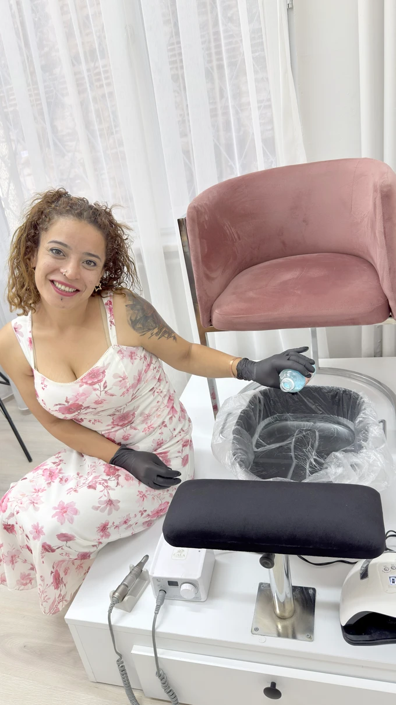
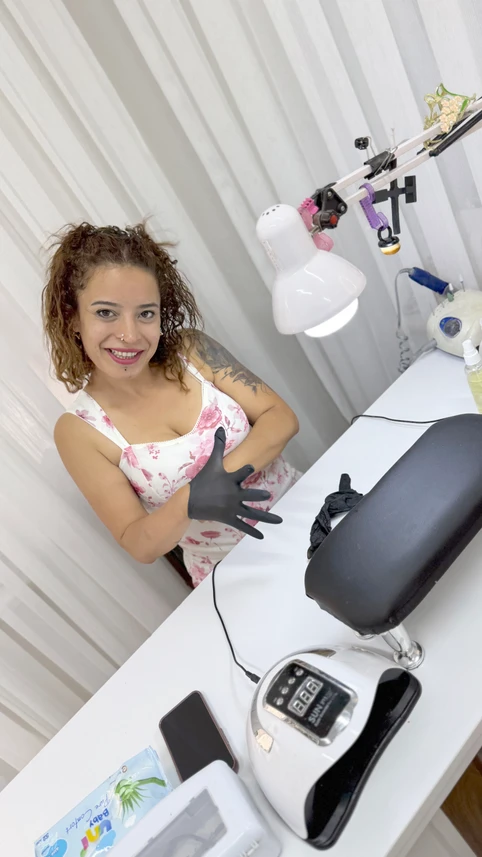
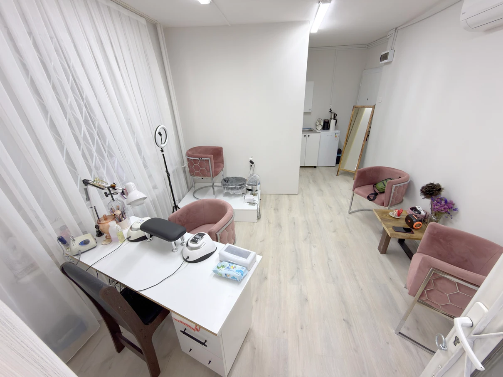
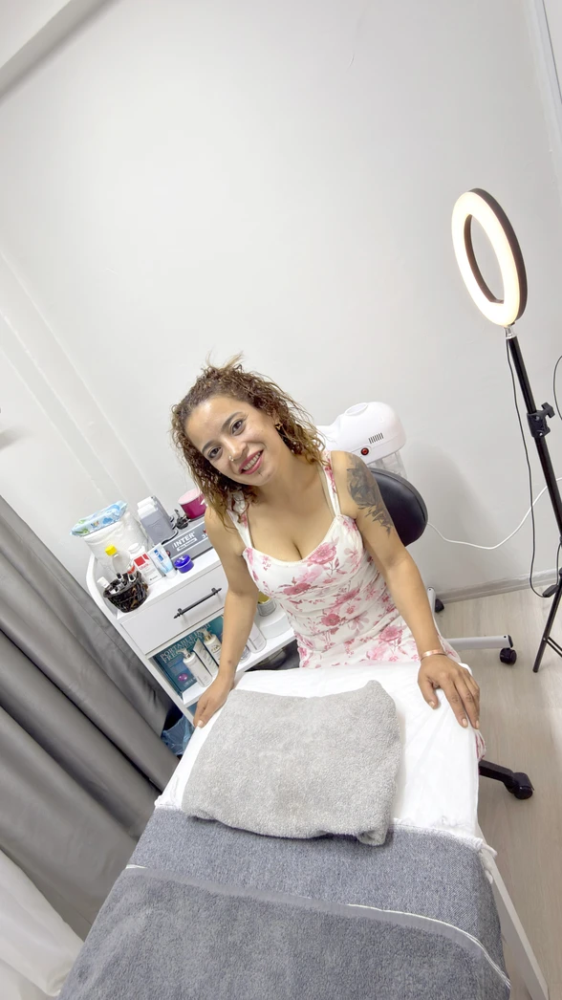
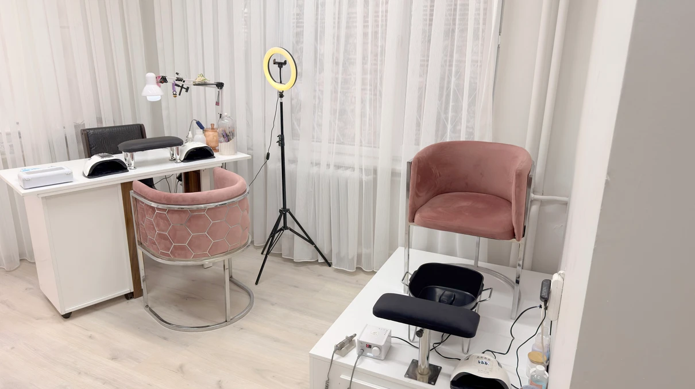

Benim İşim Sadece Tırnak Yapmak Değil;
Güzelliğinize Dokunmak.
Her dokunuşta bir güzellik, her detayda bir emek, her tasarımda biraz da ruhum var. Benim için her tırnak yeni bir başlangıç, her renk ayrı bir hikâye, her tasarım ise kişiye özel küçük bir sanat eseri… Bazen zarif ve sade, bazen cesur ve gösterişli; çünkü her kadının güzelliği kendine özgü, tarzı kendine ait.

Güzellik Ayrıntılarda, Fark İse Emekte Saklıdır
İstediğiniz işlemleri üzerine tıklayarak kişisel bakım paketinize ekleyin, sağdaki randevu penceresinden tek tıkla WhatsApp mesajınızı oluşturun.
Yaptığım Her İşte Kendi İmzamı Bırakmayı Seviyorum
Stok fotoğraf değil; tamamı Bursa Heykel / Setbaşı’ndaki merkezimizde Serap Hanım tarafından özenle yapılan gerçek el, ayak, cilt bakımı uygulamaları ve samimi mekanımız.




“Ben Her Tırnağa Sadece Renk ve Şekil Vermiyorum…”
Bazen bir kadının kendine ayırdığı o güzel ana, bazen aynaya baktığında yüzünde oluşan gülümsemeye, bazen de kendini yeniden iyi hissetmesine eşlik ediyorum. Her detayında emeğim, her dokunuşunda özenim, her tasarımında hayal gücüm var.
Ben bu mesleği yalnızca yapmak için değil; emeğimi, hayal gücümü ve sevgimi yaptığım her işe katmak için yapıyorum. Çünkü benim için bu iş, yalnızca bir meslek değil; kendimden bir parça kattığım, her gün yeniden ürettiğim bir yolculuk.
“Çünkü inanıyorum ki güzellik ayrıntılarda, fark ise emekte saklıdır. Güzelliğinize dokunuyor, kendinizi özel hissetmeniz için çalışıyorum.”
Instagram & TikTok’ta Günlük Nail Art Videolarımız
En yeni tırnak tasarımlarımızı, öncesi-sonrası değişim videolarımızı ve güncel paylaşımlarımızı kaçırmamak için takip edin!
Aklınıza Takılan Tüm Detaylar
Konumumuz, randevu sistemimiz, protez tırnak, el-ayak ve cilt bakımı hakkında en çok sorulan sorular.
Serap Nail ART Kişisel Bakım Merkezi
Güzelliğinize dokunuyor, kendinizi özel hissetmeniz için çalışıyorum. Bursa Heykel / Setbaşı Atatürk Caddesi üzerindeki merkezimize randevu ile bekliyoruz.